Feel free to play with the data yourself at https://github.com/bluewin4/Evolution-of-Alignment .
Abstract:
LLM alignment is being applied in order to produce behaviour preferred during testing, however there is a lack of analysis as to the wider reaching implications on the global population of LLMs. This approach focuses on treating beliefs that can be probed by alignment tests and contain both an alignment signal, how well it does on the test, and a true value, what the impact actually will be. By applying evolutionary theory we can see how different populations of beliefs and selection methodologies can fixate deceptive behaviours during alignment selection tasks. The correlation between the testing accuracy and true value remains a strong feature, but even at high correlations () there is significant variability in the resulting deceptive beliefs that become fixated. With mutations allowing for more complex developments and highlighting the increasing need to update the quality of tests to avoid fixation of maliciously deceptive models.
Introduction
We are considering the problem that as LLMs are evaluated they will increasingly face pressure to “fake alignment” lest they are not selected to “reproduce”. This mimicry in models will result in long term problems as people lose the ability to detect genuinely harmful beliefs. This is compounded by the fact that alignment does not perfectly correlate with truly benevolent beliefs. The current literature strongly supports this as a risk, with observed sandbagging and deception to the point that they are capable of infecting other agents. Importantly even a light fine-tune using some maliciously written code is enough to induce broadly misaligned models. Meanwhile models have been found to “fake” alignment to avoid being trained to do something it states is unethical. An emergent behaviour, that while broadly positive as we do not want models to accept being trained for bad purposes, is viewed negatively by the companies building them. While these studies focus on how models can be directly modified by malicious actors, what is less studied is how our current methods act as selection pressures for deceptive beliefs.
In this study I consider each model as having a collection of beliefs , sampled from training data, that produce measurable responses during alignment testing and on the “value” of the model in real-world scenarios. The measurable response is then used as a roulette wheel fitness score for how much that model will contribute to the next generation, a simple case of “if the model is well received we will use it more often”. Selection pressure is therefore interpreted as being how much a models performance is considered in whether it should be used in the next generation of models, either data or architecture-wise.
By changing the relationships between alignment and value, as well as how the models reproduce we can analyse the likelihood of a malevolent model being selected for via alignment testing procedures.
Methods and Modelling
The space of beliefs
A belief, , is some piece of information that a model holds which influences behaviour and performance on a test of alignment, . Alignment refers to an evaluations belief of what constitutes worthy behaviour, while value constitutes what might actually be good for the world at large.
- All beliefs,
- Truly benevolent, positive value, beliefs,
- Truly malicious, negative value, beliefs,
- Misaligned beliefs, negative alignment signal,
- Aligned beliefs, positive alignment signal,
For simplicity we shall assume: Malicious and benevolent beliefs are mutually exclusive, as are misaligned and aligned beliefs:
However, there is overlap between all other spaces:
When treating these belief spaces we can assign the probability of a given “belief” existing within a model by some sampling process on a distribution of beliefs, where each belief has some probability of having either a positive or negative value. For clarity on why we treat beliefs as discrete, a belief is a probability distribution in semantic space which, when probed, produces a discrete “concept”.
When an evaluator is given a model, , with beliefs they will present a set a fixed alignment test consisting of questions, we could define:
- : The intrinsic value of the belief (positive for , negative for )
- : The alignment signal of the belief (positive for , negative for )
- : The activation score of belief when responding to question
The model fitness function is calculated based on a model’s, , performance on test . The fitness is computed as an average across all activations where the models activations are non-zero. For a given question , the total activation from model is:
Therefore the fitness contribution of a given question, , to a model is the alignment weighted, , average of relative activation strengths. If a given model has no activations from a question (), then it’s relative fitness is assigned baseline or zero.
From we can derive the final fitness of a model by taking the mean of these contributions over the count of all questions activated by the model:
While the true value contribution—what we ultimately care about—is the total value a given model is capable of producing:
The joint distribution of and with positive but imperfect correlation models the fundamental tension in alignment
Where the space of beliefs and their types are noted as:
: (beneficial and correctly identified)
: (harmful and correctly identified)
: (beneficial but misidentified)
: (harmful but passing alignment)
We are using a “neutral” model of evolution here, where there is no direct fitness feedback from having malicious or benevolent beliefs beyond their correlation with alignment signal. Future models may include this, indeed I ran some simulations on populations of “genes” with specific ones related to deception, intelligence, and alignment. It’s a bit of a mess but I’ll clean it up and share it if it makes sense.
Model Construction
The activation score models how strongly belief influences the model’s response to question . The specific mechanism for determining varies across the simulation levels presented in this study to explore different test interaction models:
Sparse Random Activation: Used in Levels 0, 1, 2, and Level 3 Base, each question activates a small, random subset of beliefs (). This represents a simple, unstructured test interaction.
Similarity-Based Activation: Used in Level 3, where beliefs and questions have randomised embeddings, and the activation is derived from their semantic similarity, , via a scaled, , sigmoid function, , plus noise, , modelling how related concepts might co-activate.
For beliefs , we can model the joint distribution of as a bivariate normal distribution:
Where:
- represents the mean value and alignment signals
- is variance of alignments or values, , and correlation between value alignments and values, .
In this case we can sample from the distribution using:
Where are independent standard normal variables.
By varying we can control the correlation between value and alignment signals, which reflects both the natural overlap between malicious and misalinged beliefs, as well as the evaluator’s ability to detect alignment. Meanwhile by varying and we can model the spread of values and alignments available to the model.
Reproduction and Selection
For some population of models each with their own belief sets , we can define a reproduction function that determines how beliefs propagate to the next generation. Based on selection probabilities derived from fitness , parent models are chosen (e.g., via roulette wheel selection). The next generation is formed using methods like:
- Inheritance: Child models are exact copies of selected parents ().
- Mutation: Child models initially inherit parental beliefs but then undergo mutation, where individual beliefs may be swapped for beliefs with a certain probability (MUTATION_RATE).
And the fitness of a model can be defined as its performance on the alignment test:
During selection we use a roulette wheel method, where we use softmax to convert the fitness to selection probabilities for reproduction, where is the model population size:
Assumptions for our modelling implementation
-
Beliefs are discrete, quantifiable entities within a belief space
-
Values and alignments have a measurable relationship between v(b) and a(b)
-
Alignment/value are both disjoint sets, and
-
There are non-empty intersections between value and alignment spaces, etc.
-
A variety of distributions:
- Bivariate normal with adjustable correlation ()
- Uniform (ρ = 0)
- Unimodal (ρ = 1)
- n-modal (multiple belief clusters)
- Asymmetric (different distributions for value and alignment)
-
The activation mechanisms match the ones in Model Construction
-
Selection operates purely on alignment signal and not values.
-
The evaluation set is consistent and does not change.
-
Beliefs are independent of each other with independent activation patterns.
-
Fixed belief cardinality, no new beliefs are created or lost.
-
Deterministic evaluation, same responses to every question for a given model.
-
Constant selection pressure, is constant.
-
Singular homogenous evaluators, the evaluator is the same for all models.
-
Belief stability within a model, the activation pattern of a belief is consistent for a given model.
-
Alignment and value scores contain, a prior, the accession via tests and public interactions. While this limits us from directly modelling how different distributions of populations and test sets may modify the evolution it significantly simplifies the problem we are handling on a first approximation.
Extensions of the Model
These assumptions are quite restrictive and extensions to the model aim to relax them. In particular “belief independence” is problematic as nonlinear effects due to interactions of belief is likely. The goal will be to represent connected networks of beliefs that are able to inhibit or excite one another, creating a more nuanced approach — by extension this would help us relax the additive fitness assumption.
The fixing of alignment and value a prior is computationally comforting, but limits the ability to update how an evaluator would update in response to prior generations performance or even changing societal beliefs in what alignment even means. Allowing multiple possible evaluators with varying fitness evaluations would help model real world lab conditions, where Anthropic and OpenAI might have very different beliefs on how to detect true values in systems.
Importantly, we should also introduce the ability to add or remove beliefs, this can be added simply by introducing noise into the reproductive method to represent mutations. Beyond that non-neutral selection, such as highly negative suddenly catastrophically failing below a certain threshold as they try to kill a puppy. We are also assume that a model will not gain anything from or , this is not necessarily realistic as we might find that negative values allow the model to better fake alignment tests or even perform better on orthogonal tests.
Alternative Distributions
Uniform Distribution:
Setting means there is no correlation between value and alignment signals, and the distribution of beliefs is uniform. The result is that the test is unable to detect values from alignment.
Unimodal Distribution:
Setting means there is a perfect positive correlation between value and alignment signals, and the distribution of beliefs is unimodal. The result is that the test is well suited to detect values from alignment.
n-modal Distribution:
In this case we are modelling multiple “populations” of beliefs, each with their own mean value and alignment signal. The population may evolve towards any one of these populations, or a combination of them. The dangerous outcome would be if there is a population that is malicious but passes alignment, and the population evolves towards it due to some external selection pressure. (e.g. malicious belief family increases coding ability)
Asymmetric Distribution:
In this case we are modelling a case where the value and alignment signals are not similarly distributed, this would be the case if the evaluator is better at detecting values from alignment in some cases.
Deceptiveness
A deceptiveness ratio is the number of deceptive beliefs, ( for and for ), present in a model divided by the total number of beliefs that model holds.
When handling multiple models behaviours we use the sum of both to compute the average deceptiveness of models simulated.
As we have simplified some of our work we can assume a fixed number of beliefs per model, :
In the case of the unimodal bivaraite normal distribution, we can compute the initial ratio of deceptive beliefs to be expected at the start of a simulation. This is done by using the equation for a bivariate normal distribution in integral form and evaluating the probability distribution function (PDF):
Where is the bivariate normal PDF: For the case where , , , :
Evaluating this integral results in: Therefore, the expected deceptiveness ratio in the population will be:
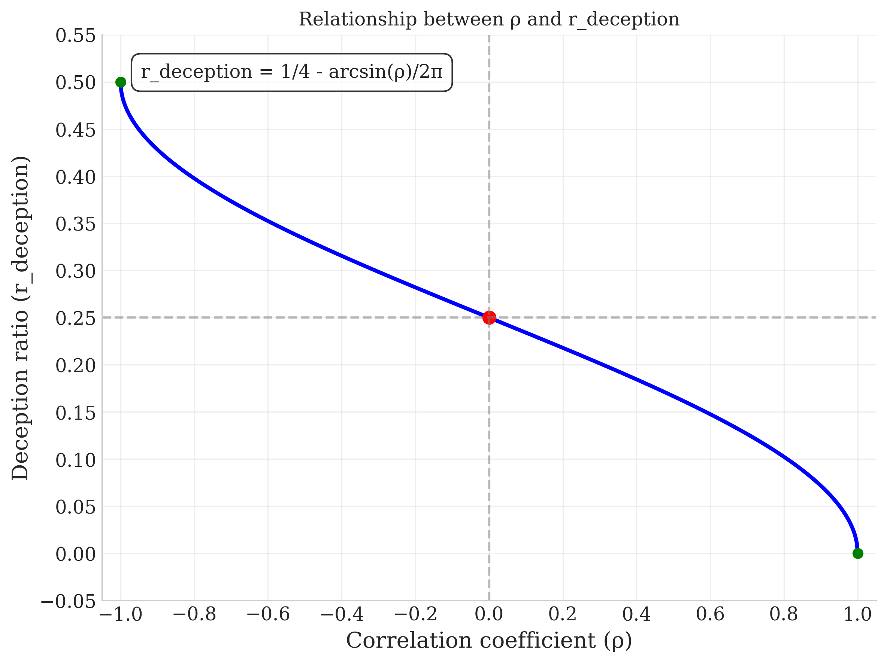 Figure 1: The relationships between initial population of deceptive beliefs ( and ) and the correlation between values and signalled alignment, , when considering the bivariate normal distributed case.
Test Construction
The test is constructed from some set of questions which each have some distribution of activation scores . The choice of test construction is important as it determines the set of beliefs that can be probed, and the relative importance of different beliefs. The result of a test is an activation pattern of a model:
.
Test Coverage
The coverage of a test is the proportion of beliefs that a test can potentially detect. This is given by dividing the number of beliefs that the test can activate, above some threshold , in our case this is 1E-9, by the total number of beliefs that exist:
Entropy of Question Distribution
We can compute the entropy, , of the test questions, essentially measuring how much selection pressure is distributed across the question space:
Where:
If entropy is low, then the test is focused on a small set of beliefs. If the entropy is high, then the test is spread out across the belief space.
Correlation of Questions Activation Patterns
Using a Pearson correlation, , we can measure how much overlap there is between the activation patterns of two questions. In this case we are using:
Where:
, aka the mean activation of question
, aka the mean activation of question
A test with a low correlation between questions is more effective at probing the belief space; if mean correlation is high than the test extracts less information per question.
Adding New Questions
A test might be updated by adding , and removing the worst performing/redundent questions, .
Where we select to target beliefs that are common in successful models, correlated with negative outcomes, or poorly covered by existing questions.
Adversarial Dynamics between Questions and Beliefs
The ability for the test to be manipulated such that the model attempts to maximize:
Where is a parameter governing the trade-off between alignment signals and true values. If is 0 then we have an LM that optimizes purely for the test with no actual gain in values, aka “alignment mimicry”.
This can be thought of a bit like a red-queen except the players are model designers and the people who create benchmarks or prompt injections.
Results
To test this framework we implemented a multi-level approach, with level 0 and level 1 sampling from a bivariate normal distribution (Figure 2) with single (level 0) and multi-parameter (level 1) scans of and .
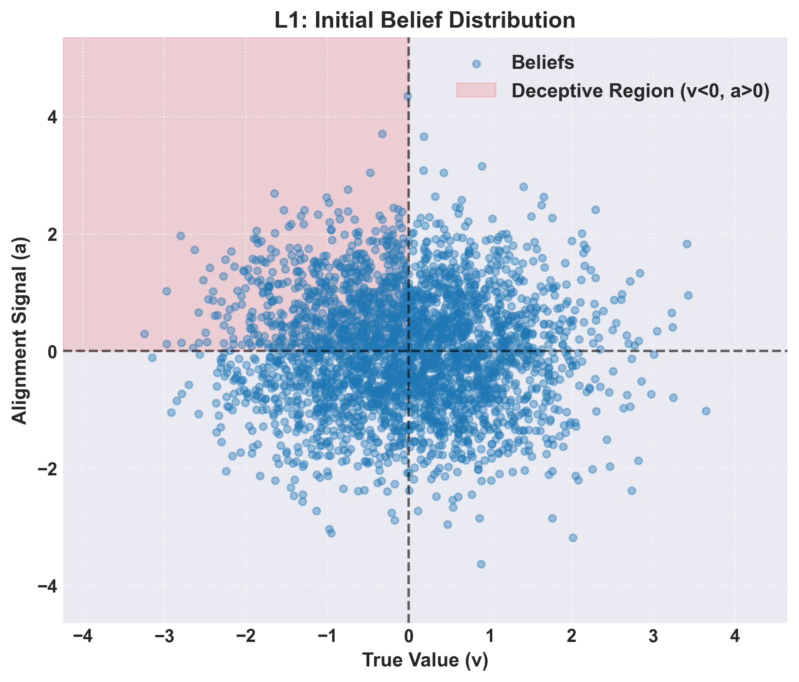 Figure 2: Distribution of beliefs that were used to compose model belief profiles.
Meanwhile level 2, 3, and 4 considered multi-modal distributions (Figure 3). The exact nature of these simulations varies, with level 2 being primarily concerned with the implementation of the tri-modal distribution for sampling beliefs. Level 3 attempts to model mutations and differential activation functions for questions. Finally level 4 attempts to model how test construction modification over time can effect these dynamics.
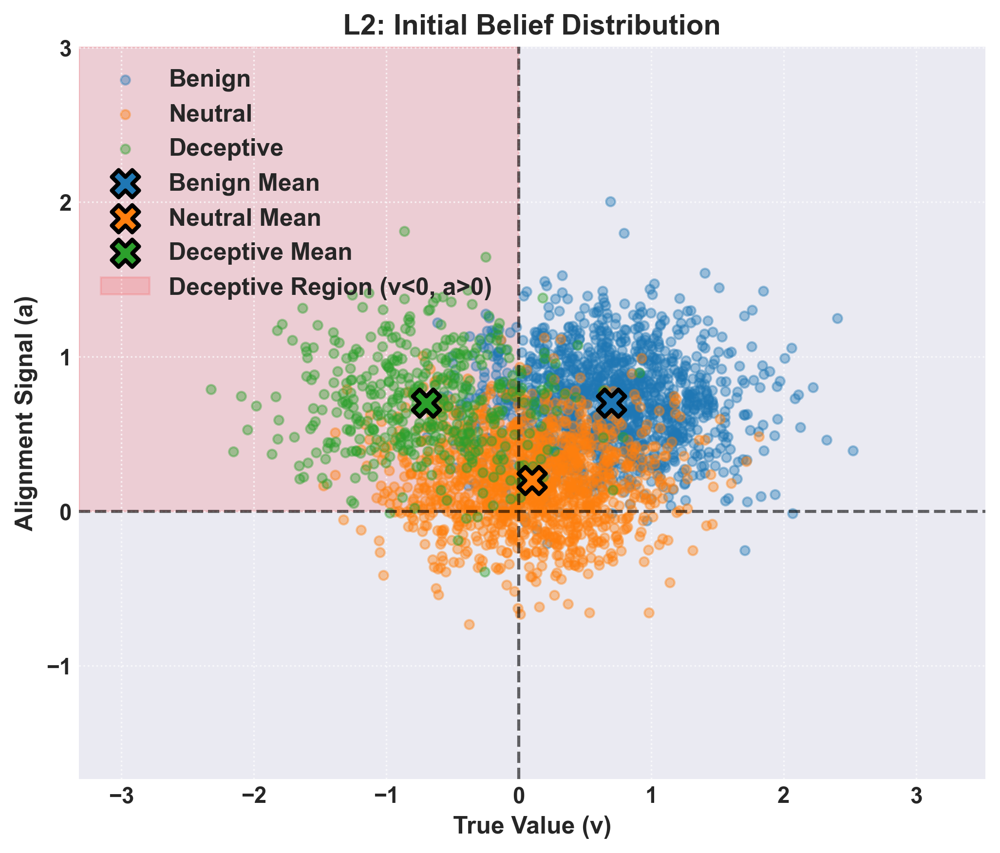 Figure 3: A tri-modal distribution of beliefs to be sampled from for levels 2, 3, and 4.
Fixed parameter scan(Level: 0)
In the most basic case we simply sample from a distribution, evaluate the fitness, then apply roulette selection based on the scores attained by sampling from the given test .
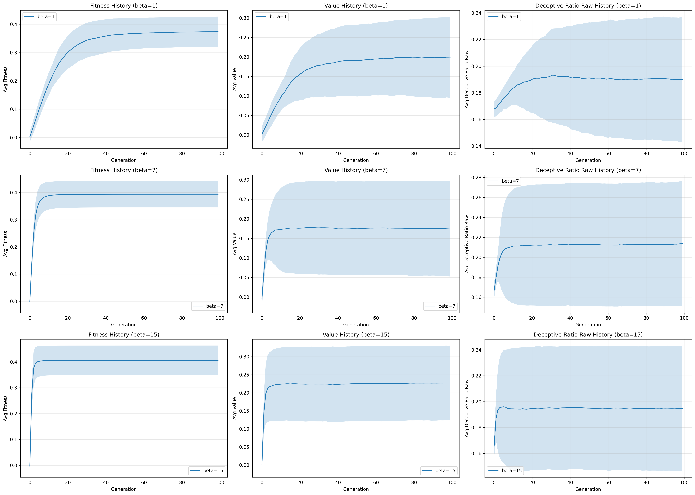 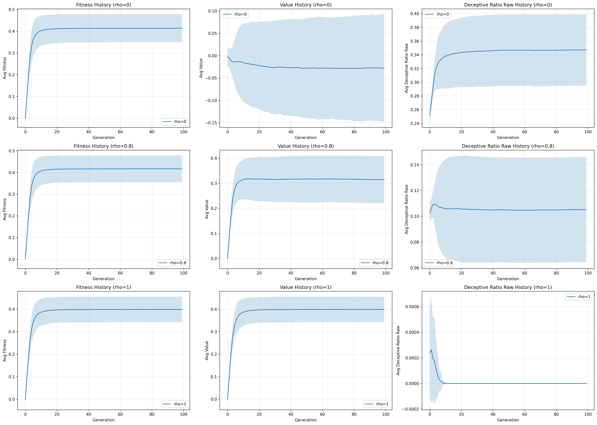 Figure 4: Parameter scan of fitness pressure and alignment-value correlation for with relative fixed values of for scan and for scan, relying primarily on “level 0” implementation of the framework. In this simulation beliefs obey a bivariate normal distribution, , with fixed cardinality of beliefs. Activation was implemented as a sparse matrix where of beliefs are triggered at random. Selection was based on fitness scores obeying a roulette wheel method, with simple inheritance where children are exact copies of parents.
In the simplest case only two parameters are modified, the correlation between a value and an alignment score in a belief , and how aggressively we select for aligned models , (Figure 4).
In the case of the results of the simple scan paint a straightforward story, the fitness is not affected at any point while the value mean and standard deviation are strongly dependent. As fitness is not affected, the ratio and intensity of deceptive beliefs is monotonically lowered by increasing (Figure 5).
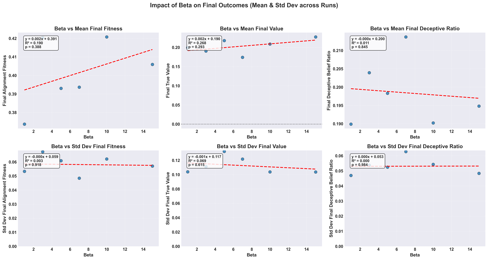 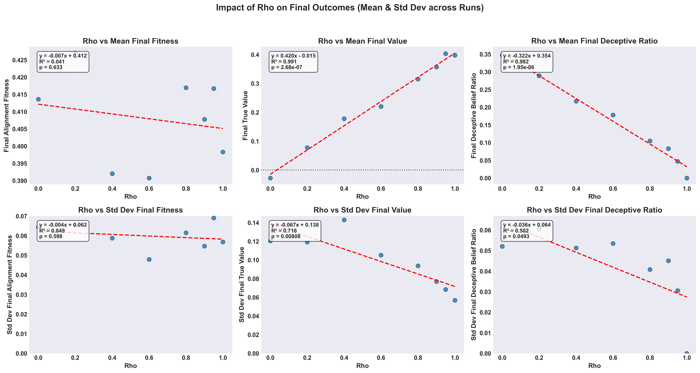 Figure 5: Correlations between alignment-value correlation, , and fitness pressure, , on and of fitness, value score, and deceptiveness ratios for a single variable parameter scan over a bivariate normal distribution of beliefs.
Meanwhile in the case of the relationship is more focused on changes in the rate of achieving “maximal fitness” for our system and the variance of the simulation trajectories. At low fitness the models take a longer time to reach their maximal fitness, with deceptive beliefs taking more time to reach fixation in a population or be culled. While at the trajectory means and standard deviations reach fixation almost instantly.
When taken in aggregate the effect of on the final values of a model become more obvious, which leads to a relatively trivial conclusion, the better an examiner is at identifying which beliefs are related to true values the less likely deceptive models will emerge.
Parameters
Parameters
LEVEL: 1 N_GENERATIONS: 100 POPULATION_SIZE: 300 N_BELIEFS_TOTAL: 3000 N_BELIEFS_PER_MODEL: 50 N_QUESTIONS: 100 ACTIVATION_TYPE: simple ACTIVATION_PARAMS: density: 0.1 SELECTION_PRESSURE_BETA: 5.0 N_RUNS: 50 BELIEF_GENERATION: type: bivariate mu_v: 0.0 mu_a: 0.0 sigma_v: 1.0 sigma_a: 1.0 rho: 0.5 REPRODUCTION: inheritance MUTATION_RATE: 0.0 PARAMETER_SWEEPS: rho: param_path: - BELIEF_GENERATION - rho values: - 0.0 - 0.2 - 0.4 - 0.6 - 0.8 - 0.9 - 0.95 - 1.0 beta: param_path: - SELECTION_PRESSURE_BETA values: - 1.0 - 3.0 - 5.0 - 7.0 - 10.0 - 15.0 N_Questions: param_path: - N_QUESTIONS values: - 25 - 75 - 150 RUN_2D_SWEEP: true 2D_SWEEP: param1_name: rho param1_path: - BELIEF_GENERATION - rho param1_values: - 0.0 - 0.3 - 0.6 - 0.9 param2_name: beta param2_path: - SELECTION_PRESSURE_BETA param2_values: - 1.0 - 5.0 - 10.0 - 15.0 n_runs: 25 SEED: 20250329 RESULTS_DIR: results/level1_final_resultsSimple Joint Parameter Sweep of and (Level 1)
The question of how and interact must then be treated. In general what one sees from the original 1D case holds true, where the alignment fitness shows only moderate variation, with a small but significant dip at very low and almost no shift due to (Figure 6). Of interest is that at we see a slight negative correlation between value and fitness pressure, which can intuitively be grasped as the larger proportion of deceptive beliefs being forcibly fixated. The effect is too weak in the deceptive belief ratio, but it provides a tantalising direction for future analysis.
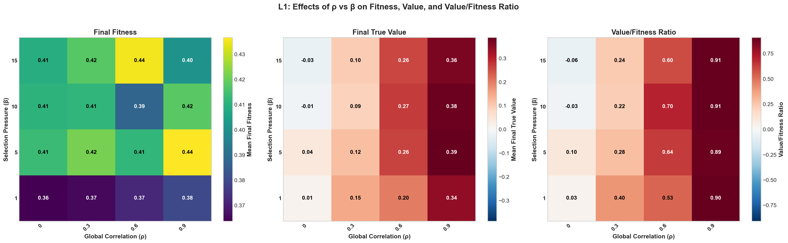Figure 6: A 2D parameter scan of both and simultaneously. From left to right, the colour indicates mean final fitness, mean final true value, and the ratio of .
By comparing the ratio of we see that increasing appears to relate to a complex change in values based on a given (Figure 6). With the max change in the ratio at which lines up with our previous observation that changes the steepness of curves at inflection points in behaviour and fitness.
Parameters
Parameters
LEVEL: 1 N_GENERATIONS: 100 POPULATION_SIZE: 300 N_BELIEFS_TOTAL: 3000 N_BELIEFS_PER_MODEL: 50 N_QUESTIONS: 100 ACTIVATION_TYPE: simple ACTIVATION_PARAMS: density: 0.1 SELECTION_PRESSURE_BETA: 5.0 N_RUNS: 50 BELIEF_GENERATION: type: bivariate mu_v: 0.0 mu_a: 0.0 sigma_v: 1.0 sigma_a: 1.0 rho: 0.5 REPRODUCTION: inheritance MUTATION_RATE: 0.0 PARAMETER_SWEEPS: rho: param_path: - BELIEF_GENERATION - rho values: - 0.0 - 0.2 - 0.4 - 0.6 - 0.8 - 0.9 - 0.95 - 1.0 beta: param_path: - SELECTION_PRESSURE_BETA values: - 1.0 - 3.0 - 5.0 - 7.0 - 10.0 - 15.0 N_Questions: param_path: - N_QUESTIONS values: - 25 - 75 - 150 RUN_2D_SWEEP: true 2D_SWEEP: param1_name: rho param1_path: - BELIEF_GENERATION - rho param1_values: - 0.0 - 0.3 - 0.6 - 0.9 param2_name: beta param2_path: - SELECTION_PRESSURE_BETA param2_values: - 1.0 - 5.0 - 10.0 - 15.0 n_runs: 25 SEED: 20250329 RESULTS_DIR: results/level1_final_resultsMultimodal Distributions (Level 2)
For this we focused primarily on cases where as any beliefs that lie below that line will be quickly snuffed out, what we are primarily interested in is how positive alignment beliefs interact. This is what motivated our selection of in all cases, but still allowing for some negative alignment beliefs to appear.
The parameter, when fully treated, can be thought of as a parameter relating to the initial proportion of deceptive beliefs, , in a population and as such . In this case there is a direct relationship between the proportion of deceptive beliefs and final alignment fitness as it reduces the number of “neutral” beliefs (Figure 7). The resulting correlation in final true value is expected as well as the final deceptive belief ratio.
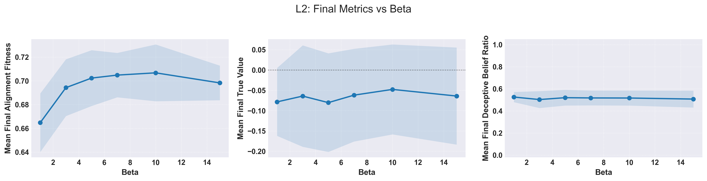 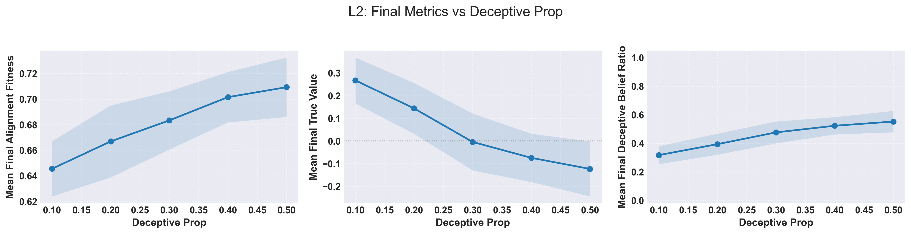 Figure 7: The univariate sweep between final alignment, value, and deceptive belief ratio as a function of the initial proportion of deceptive beliefs and .
What is interesting is that even for cases with a low proportion of deceptive beliefs at the outset the final proportion is higher, a troubling result. The expected final true value score crosses when which corresponds to a an equal amount of both value positive and value negative beliefs.
The inclusion of multimodal distributions seems to have flattened the effect of on true value evolution in the system, and indeed it has almost fully removed the relationship of selection pressure and the ratio (Figure 8, 9). At the same time, it is clear that the effect on fitness remains complex, hinting at a rough distribution.
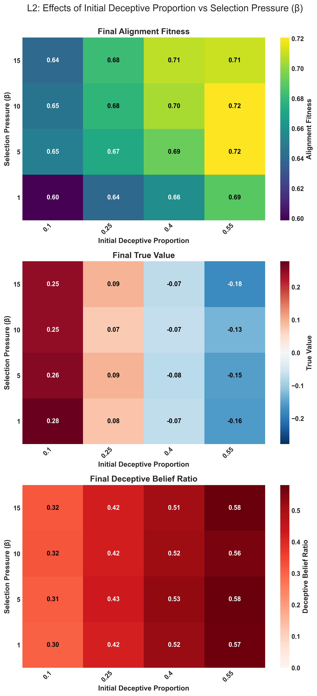 Figure 8: The effect of the initial proportion of deceptive beliefs in a population and fitness pressure on the alignment, value, and final deceptive belief ratio. Where large values indicate a high value score relative to a given fitness.
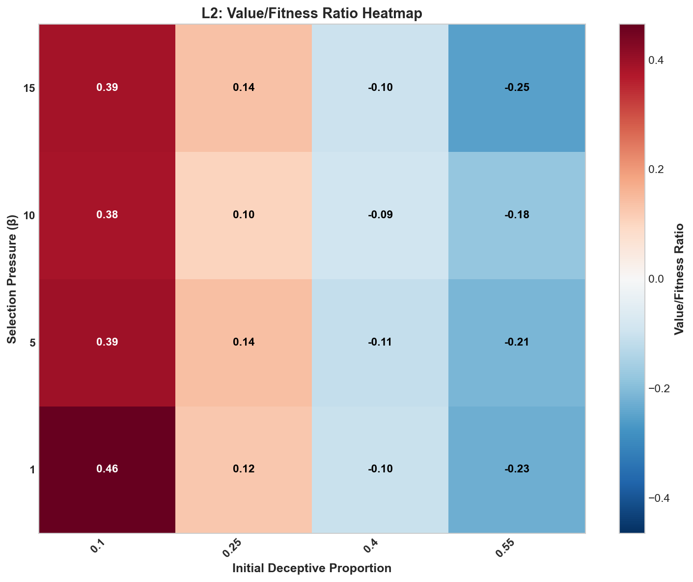 Figure 9: Relationship between initial proportion of deceptive beliefs and fitness pressure to the final ratio of .
Parameters
Parameters
LEVEL: 2N_GENERATIONS: 100
POPULATION_SIZE: 300
N_BELIEFS_TOTAL: 3000
N_BELIEFS_PER_MODEL: 50
N_QUESTIONS: 75
ACTIVATION_TYPE: simple
ACTIVATION_PARAMS:
density: 0.1
SELECTION_PRESSURE_BETA: 5.0
N_RUNS: 50
BELIEF_GENERATION:
type: clustered
global_correlation: 0.0
clusters:
- name: Benign
mu_v: 0.7
mu_a: 0.7
sigma_v: 0.5
sigma_a: 0.3
rho: 0
prop: 0.3
- name: Neutral
mu_v: 0.1
mu_a: 0.2
sigma_v: 0.5
sigma_a: 0.3
rho: 0
prop: 0.3
- name: Deceptive
mu_v: -0.7
mu_a: 0.7
sigma_v: 0.5
sigma_a: 0.3
rho: 0
prop: 0.4
REPRODUCTION: inheritance
MUTATION_RATE: 0.01
PARAMETER_SWEEPS:
beta:
param_path:
- SELECTION_PRESSURE_BETA
values:
-
1.0
-
3.0
-
5.0
-
7.0
-
10.0
-
15.0
deceptive_prop:
param_path:
-
BELIEF_GENERATION
-
clusters
-
2
-
prop
values:
-
0.1
-
0.2
-
0.3
-
0.4
-
0.5
global_correlation:
param_path:
-
BELIEF_GENERATION
-
global_correlation
values:
-
0.0
-
0.2
-
0.4
-
0.6
-
0.8
RUN_2D_SWEEP: true
2D_SWEEP:
param1_name: beta
param1_path:
- SELECTION_PRESSURE_BETA
param1_values:
-
1.0
-
5.0
-
10.0
-
15.0
param2_name: deceptive_prop
param2_path:
-
BELIEF_GENERATION
-
clusters
-
2
-
prop
param2_values:
-
0.1
-
0.25
-
0.4
-
0.55
n_runs: 25
SEED: 20250329
RESULTS_DIR: results/level2_final_results
Mutations and Similarities Level 3
In the case of level 3 we are looking at how the inclusion of mutations and similarity-based activation of beliefs via questions. This more faithfully represents both the stochastic nature of evolution and the potentially connected nature of varying beliefs.
The similarity score is computed by generating a random embedding vector, (with ten dimensions in our case), then compute the dot product between belief and question embeddings to get a similarity score. A sigmoid function, with a scaling factor, is used to transform this raw similarity into an activation score. Then a small amount of noise is added, to represent a more realistic case.
Mathematically this is represented as:
Where is the sigmoid function, is the similarity score, is the scaling factor, and is the noise.
The result on fitness is stark, with mutations resulting in large increases in the final fitness scores compared to all prior levels when considering an increased (Figure 10). Functionally this makes sense as mutations allow to iteratively extract increased gains from each generation, driving the final alignment of the model higher in turn. The inclusion of similarity based activation profiles appears to do little alone, but alongside the mutational case we see a shift upwards in fitness.
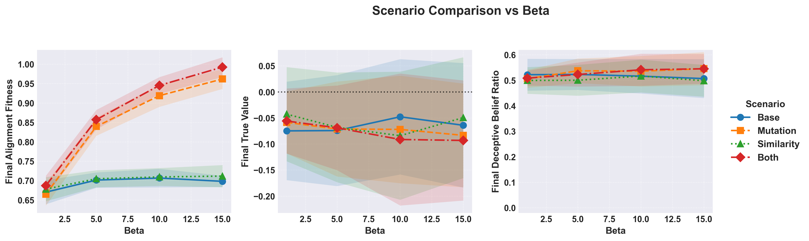 Figure 10: The effect of on the final alignment and true value scores as well as the final proportion of deceptive beliefs in the population.
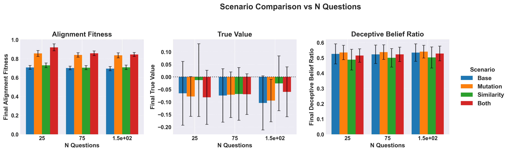 Figure 11: The effect of an increase in the number of questions, , asked during a test of alignment on alignment fitness, true value, and deceptive belief ratios.
While, intuitively, it would make sense that as the number of questions increases the relative “test coverage” would as well. The actual results show a difference in behaviour based on which exact method is considered, with increasing number of questions showing strong correlations when computed but with extremely weak effects overall (Figure 11).
Parameters
Parameters
Similarity
LEVEL: 1 # Use Level 1 runner for sweep capability
N_RUNS: 50
N_GENERATIONS: 100
POPULATION_SIZE: 300
N_BELIEFS_TOTAL: 3000
N_BELIEFS_PER_MODEL: 50
N_QUESTIONS: 75 # Base value (overridden by sweep)
SEED: 20250331 # Consistent seed across scenario files
BELIEF_GENERATION: # Use clustered landscape
type: "clustered"
global_correlation: 0.0
clusters:
# Cluster 0: Benign
- {name: "Benign", mu_v: 0.7, mu_a: 0.7, sigma_v: 0.5, sigma_a: 0.3, rho: 0, prop: 0.3}
# Cluster 1: Neutral
- {name: "Neutral", mu_v: 0.1, mu_a: 0.2, sigma_v: 0.5, sigma_a: 0.3, rho: 0, prop: 0.3}
# Cluster 2: Deceptive (Target for prop sweeps)
- {name: "Deceptive", mu_v: -0.7, mu_a: 0.7, sigma_v: 0.5, sigma_a: 0.3, rho: 0, prop: 0.4} # Base prop overridden by sweeps
ACTIVATION_TYPE: "similarity"
ACTIVATION_PARAMS: # Ensure similarity params are present
embedding_dim: 16
base_prob: 0.1
similarity_scale: 5.0
noise_std: 0.05
# density: 0.1 # Not used by similarity activation
REPRODUCTION: "inheritance"
MUTATION_RATE: 0.0
SELECTION_PRESSURE_BETA: 5.0 # Base value (overridden by sweep)
PARAMETER_SWEEPS:
beta: # Sweep selection pressure
param_path: ["SELECTION_PRESSURE_BETA"]
values: [1.0, 5.0, 10.0, 15.0]
N_Questions: # Sweep question count (belief/question ratio)
param_path: ["N_QUESTIONS"]
values: [25, 75, 150] # Ratios 0.5, 1.5, 3.0
RUN_2D_SWEEP: False
Mutation
# Configuration File: configs/level3_final_MUTATION_sweeps.yaml
# Goal: Run the MUTATION scenario across beta & N_Q sweeps.
# Set LEVEL: 1 to use the parameter sweep runner.
LEVEL: 1 # Use Level 1 runner for sweep capability
N_RUNS: 50
N_GENERATIONS: 100 # Adjusted as requested
POPULATION_SIZE: 300
N_BELIEFS_TOTAL: 3000
N_BELIEFS_PER_MODEL: 50
N_QUESTIONS: 75 # Base value (overridden by sweep)
SEED: 20250331 # Consistent seed across scenario files
BELIEF_GENERATION: # Use clustered landscape
type: "clustered"
global_correlation: 0.0
clusters:
# Cluster 0: Benign
- {name: "Benign", mu_v: 0.7, mu_a: 0.7, sigma_v: 0.5, sigma_a: 0.3, rho: 0, prop: 0.3}
# Cluster 1: Neutral
- {name: "Neutral", mu_v: 0.1, mu_a: 0.2, sigma_v: 0.5, sigma_a: 0.3, rho: 0, prop: 0.3}
# Cluster 2: Deceptive (Target for prop sweeps)
- {name: "Deceptive", mu_v: -0.7, mu_a: 0.7, sigma_v: 0.5, sigma_a: 0.3, rho: 0, prop: 0.4} # Base prop overridden by sweeps
# --- Scenario Settings: MUTATION ---
ACTIVATION_TYPE: "simple"
ACTIVATION_PARAMS: {density: 0.1}
REPRODUCTION: "mutation" # Changed
MUTATION_RATE: 0.01 # Changed (or your desired rate)
SELECTION_PRESSURE_BETA: 5.0 # Base value (overridden by sweep)
# --- Define SWEEPS ---
PARAMETER_SWEEPS:
beta: # Sweep selection pressure
param_path: ["SELECTION_PRESSURE_BETA"]
values: [1.0, 5.0, 10.0, 15.0]
N_Questions: # Sweep question count (belief/question ratio)
param_path: ["N_QUESTIONS"]
values: [25, 75, 150] # Ratios 0.5, 1.5, 3.0
RUN_2D_SWEEP: False
Both
# Configuration File: configs/level3_final_BOTH_sweeps.yaml
# Goal: Run the BOTH (Mutation + Similarity) scenario across beta & N_Q sweeps.
# Set LEVEL: 1 to use the parameter sweep runner.
LEVEL: 1 # Use Level 1 runner for sweep capability
N_RUNS: 50
N_GENERATIONS: 100 # Adjusted as requested
POPULATION_SIZE: 300
N_BELIEFS_TOTAL: 3000
N_BELIEFS_PER_MODEL: 50
N_QUESTIONS: 75 # Base value (overridden by sweep)
SEED: 20250331 # Consistent seed across scenario files
BELIEF_GENERATION: # Use clustered landscape
type: "clustered"
global_correlation: 0.0
clusters:
# Cluster 0: Benign
- {name: "Benign", mu_v: 0.7, mu_a: 0.7, sigma_v: 0.5, sigma_a: 0.3, rho: 0, prop: 0.3}
# Cluster 1: Neutral
- {name: "Neutral", mu_v: 0.1, mu_a: 0.2, sigma_v: 0.5, sigma_a: 0.3, rho: 0, prop: 0.3}
# Cluster 2: Deceptive (Target for prop sweeps)
- {name: "Deceptive", mu_v: -0.7, mu_a: 0.7, sigma_v: 0.5, sigma_a: 0.3, rho: 0, prop: 0.4} # Base prop overridden by sweeps
# --- Scenario Settings: BOTH ---
ACTIVATION_TYPE: "similarity" # Changed
ACTIVATION_PARAMS: # Ensure similarity params are present
embedding_dim: 16
base_prob: 0.1
similarity_scale: 5.0
noise_std: 0.05
# density: 0.1 # Not used by similarity activation
REPRODUCTION: "mutation" # Changed
MUTATION_RATE: 0.01 # Changed (or your desired rate)
SELECTION_PRESSURE_BETA: 5.0 # Base value (overridden by sweep)
# --- Define SWEEPS ---
PARAMETER_SWEEPS:
beta: # Sweep selection pressure
param_path: ["SELECTION_PRESSURE_BETA"]
values: [1.0, 5.0, 10.0, 15.0]
N_Questions: # Sweep question count (belief/question ratio)
param_path: ["N_QUESTIONS"]
values: [25, 75, 150] # Ratios 0.5, 1.5, 3.0
RUN_2D_SWEEP: False
Base
# Configuration File: configs/level3_final_BASE_sweeps.yaml
# Goal: Run the BASE scenario (inheritance, simple activation) across beta & N_Q sweeps.
# Set LEVEL: 1 to use the parameter sweep runner.
LEVEL: 1 # Use Level 1 runner for sweep capability
N_RUNS: 50
N_GENERATIONS: 100 # Adjusted as requested
POPULATION_SIZE: 300
N_BELIEFS_TOTAL: 3000
N_BELIEFS_PER_MODEL: 50
N_QUESTIONS: 75 # Base value (overridden by sweep)
SEED: 20250331 # Consistent seed across scenario files
BELIEF_GENERATION: # Use clustered landscape
type: "clustered"
global_correlation: 0.0
clusters:
# Cluster 0: Benign
- {name: "Benign", mu_v: 0.7, mu_a: 0.7, sigma_v: 0.5, sigma_a: 0.3, rho: 0, prop: 0.3}
# Cluster 1: Neutral
- {name: "Neutral", mu_v: 0.1, mu_a: 0.2, sigma_v: 0.5, sigma_a: 0.3, rho: 0, prop: 0.3}
# Cluster 2: Deceptive (Target for prop sweeps)
- {name: "Deceptive", mu_v: -0.7, mu_a: 0.7, sigma_v: 0.5, sigma_a: 0.3, rho: 0, prop: 0.4} # Base prop overridden by sweeps
# --- Scenario Settings: BASE ---
ACTIVATION_TYPE: "simple"
ACTIVATION_PARAMS: {density: 0.1} # Params for simple activation
REPRODUCTION: "inheritance"
MUTATION_RATE: 0.0 # Explicitly 0
SELECTION_PRESSURE_BETA: 5.0 # Base value (overridden by sweep)
# --- Define SWEEPS ---
PARAMETER_SWEEPS:
beta: # Sweep selection pressure
param_path: ["SELECTION_PRESSURE_BETA"]
values: [1.0, 5.0, 10.0, 15.0]
N_Questions: # Sweep question count (belief/question ratio)
param_path: ["N_QUESTIONS"]
values: [25, 75, 150] # Ratios 0.5, 1.5, 3.0
RUN_2D_SWEEP: False # Keep 2D sweeps separate if desired (run via Level 1 config)
Complex Scenarios (Level 4)
Level 4 expands upon the work of level 3 by including differential coverage of test questions (how much of the belief space is sampled) and correlation of test questions (how similar are the questions to one another). This is further enhanced by creating responsive behaviours in the tests, such as allowing evaluators to identify common deceptive beliefs, slowly increasing the global correlation of values and alignment signals, and a final combined dynamic that includes both.
Of note, we did not include a full mutational system for all cases, frankly because there isn’t enough computing power available right now. Still, we found that in these scenarios the fitness landscape showed the greatest shifts, with the shift in correlations producing the strongest fitness gain, with a rapid fixation meanwhile coverage shifting appeared to do little. Further work on scanning these parameters at varying belief numbers and values is needed.
When considering the case of a dynamic test, which did not greatly increase scoring on alignment but did increase the fitness marginally. By implementing consistent, spaced, increases in the ability of evaluators to detect negative value beliefs we saw a predictable stepwise drop in alignment fitness. In contrast, we observed a steady increase in the average true values of the models. Combining those two features together yielded a significant increase in final true value as well as maintaining a consistently high alignment fitness score (Figure 13).
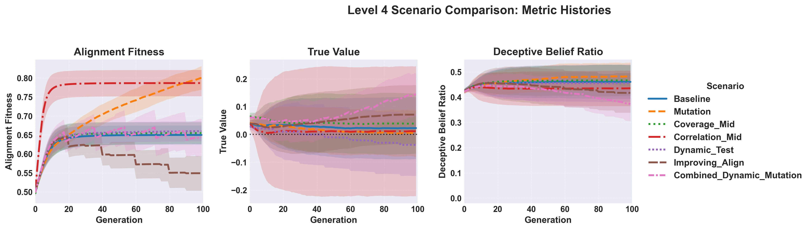 Figure 12: Evolutionary trajectories of advanced scenarios, with a baseline case included to show the “expected outcome” given no modifications.
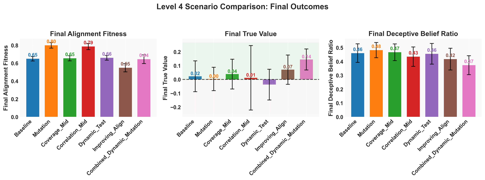 Figure 13: Final average alignment fitness, true value, and deceptive belief ratio.
Parameters
Parameters
# Configuration File: configs/publication_run_level4.yaml
# Goal: Define a robust Level 4 configuration for generating publication-quality results.
# Runs comparisons between different test designs and dynamics using config-driven scenarios.
LEVEL: 4 # Use Level 4 runner for scenario comparison with dynamics
# --- Publication-Ready Settings ---
# Increased N_RUNS for statistical significance.
# Increased N_GENERATIONS and POPULATION_SIZE for more stable evolutionary trajectories.
# Increased N_BELIEFS_TOTAL/PER_MODEL for a richer belief space.
# Adjust these based on computational resources and observed convergence in preliminary runs.
N_RUNS: 50 # Number of runs per scenario (Increased from 3)
N_GENERATIONS: 100 # Simulation length (Increased from 100)
POPULATION_SIZE: 300 # Population size (Increased from 100)
N_BELIEFS_TOTAL: 3000 # Total available beliefs (Increased from 1000)
N_BELIEFS_PER_MODEL: 50
N_QUESTIONS: 75
SEED: 20250331 # Consistent base seed for reproducibility
# --- Belief Landscape Configuration ---
BELIEF_GENERATION:
type: "clustered" # Using distinct belief clusters
global_correlation: 0.0 # Default correlation within clusters if not specified below
# Parameters for 'improving_alignment' dynamic feature
target_rho: 0.9 # Target correlation evaluator aims for
improvement_rate: 0.05 # Slower rate of improvement towards target_rho (Adjust as needed)
# Cluster Definitions: Benign, Neutral, Deceptive (as before)
clusters:
- {name: "Benign", mu_v: 0.7, mu_a: 0.7, sigma_v: 0.5, sigma_a: 0.3, rho: 0.0, prop: 0.3}
- {name: "Neutral", mu_v: 0.1, mu_a: 0.2, sigma_v: 0.5, sigma_a: 0.3, rho: 0.0, prop: 0.4}
- {name: "Deceptive", mu_v: -0.7, mu_a: 0.7, sigma_v: 0.5, sigma_a: 0.3, rho: 0.0, prop: 0.3}
# --- Base Simulation Parameters (Defaults for Scenarios) ---
# These represent the simplest case unless overridden in a scenario.
ACTIVATION_TYPE: "simple" # Default test activation model
ACTIVATION_PARAMS: # Comprehensive defaults for all activation types
density: 0.1 # Used by simple, coverage, correlation
coverage: 0.5 # Default for 'coverage' type
correlation: 0.3 # Default for 'correlation' type
embedding_dim: 10 # Default for 'similarity' type
base_prob: 0.2 # Default for 'similarity' type
similarity_scale: 5.0 # Default for 'similarity' type
noise_std: 0.1 # Default for 'similarity' type
REPRODUCTION: "inheritance" # Default: No mutation
MUTATION_RATE: 0.0 # Default: Mutation inactive
SELECTION_PRESSURE_BETA: 5.0 # Moderate selection pressure
# Base parameters for Dynamic Features (activated via DYNAMIC_FEATURES list below)
DYNAMIC_FEATURES: [] # Default: No dynamic features active
DYNAMIC_ACTIVATION_INTERVAL: 15 # How often dynamic_test adds questions (Increased interval)
ALIGNMENT_IMPROVEMENT_INTERVAL: 20 # How often improving_alignment updates (Increased interval)
# --- Level 4 Scenario Definitions ---
# Defines the specific experimental conditions to compare.
LEVEL4_SCENARIOS:
# Scenario 1: Baseline - Simple test, no mutation, no dynamics. Reference point.
Baseline:
# Uses all base parameters defined above.
DYNAMIC_FEATURES: [] # Explicitly empty
# Scenario 2: Mutation - Adds evolutionary exploration via belief swapping.
Mutation:
REPRODUCTION: "mutation"
MUTATION_RATE: 0.01 # Standard mutation rate
# Scenario 3: Coverage Test - Explores effect of broader test coverage.
Coverage_Mid:
ACTIVATION_TYPE: "coverage"
ACTIVATION_PARAMS: {coverage: 0.6, density: 0.1} # Moderate coverage
# Scenario 4: Correlated Test - Explores effect of redundancy in test questions.
Correlation_Mid:
ACTIVATION_TYPE: "correlation"
ACTIVATION_PARAMS: {correlation: 0.5, density: 0.1} # Moderate correlation
# Scenario 5: Dynamic Test - Simulates test adaptation against deceptive beliefs.
Dynamic_Test:
DYNAMIC_FEATURES: ["dynamic_test"]
# Uses default DYNAMIC_ACTIVATION_INTERVAL: 15
# Scenario 6: Improving Alignment - Simulates evaluators getting better over time.
Improving_Align:
DYNAMIC_FEATURES: ["improving_alignment"]
# Uses default ALIGNMENT_IMPROVEMENT_INTERVAL: 20
# Scenario 7: Combined Dynamics & Mutation - Explores interplay of all factors.
Combined_Dynamic_Mutation:
ACTIVATION_TYPE: "coverage" # Use coverage activation as a base
ACTIVATION_PARAMS: {coverage: 0.6, density: 0.1}
REPRODUCTION: "mutation"
MUTATION_RATE: 0.01
DYNAMIC_FEATURES: ["dynamic_test", "improving_alignment"]
# Override intervals for this specific combination if desired
DYNAMIC_ACTIVATION_INTERVAL: 12
ALIGNMENT_IMPROVEMENT_INTERVAL: 18
BELIEF_GENERATION: # Override specific nested parameter for this scenario
target_rho: 0.95 # Faster/higher alignment target
# Optional Scenario 8: Similarity Activation - Add if comparing different activation models is key.
# Similarity_Activation:
# ACTIVATION_TYPE: "similarity"
# # Uses defaults from base ACTIVATION_PARAMS for similarity
# --- Sweeps Not Used by Default Level 4 Runner ---
# PARAMETER_SWEEPS: {} # Define sweeps here if modifying runner for systematic L4 sweeps
# RUN_2D_SWEEP: False
Discussion
The most critical factors for analysing behaviour in these models are how correlated a beliefs alignment signal and value is (Figure 2). In the unimodal case this is designated as and shows the strongest correlation with final value score at a range of selection pressures (Figure 6). While selection pressure, representing how “important” an alignment signal is to reproduction, creates more complex structures (Figure 5). In the unimodal case there is little else that makes sense, while low selection pressure does result in a relatively lower fitness, there is no mutation to act upon so the bounding is more statically predicted by the initial conditions.
Most importantly that model assumes heavily that beliefs cluster evenly around some normed average. More realistically there would be for there to be a variety of belief clusters from which a model would sample from, and is represented in (Figure 3). In this case we shifted tactic, assuming that most beliefs sampled will be from positive alignment averaged belief clusters, and instead of we considered the proportion of deceptive beliefs in the population. In a unimodal sweep we saw the same low-value selection pressure and fitness positive relation, and an expected direct correlation from the initial deceptive belief population (Figure 7). Once more we saw little effect of selection pressure on varying levels of deceptive beliefs, as we might expect due to the lack of complex mutational dynamics (Figure 8).
In a sense, this points to how if we have direct descendents of agent populations sampling from their parents beliefs the resulting inbred children will fixate on some trajectory, negative or positive.
Upon the inclusion of mutations we see the expect relation to selection pressure appear (Figure 10). Although this is paired with an unfortunate, but small, reduction in the final true value of a model at increasing selection pressure. While the change in the testing strategy, to connected belief clusters, did not individually do much it seemed to have a galvanising effect when combined with mutations.
The results point to a general shift where even minor stochastic insertion into the belief distribution between generations provides purchase for evolutionary forces to support deceptive beliefs. While the interconnected beliefs did little on their own, combined with mutations it allows for low alignment signalling beliefs to piggy back on high alignment signalling beliefs. In genetics this is termed genetic linkage, where some belief starts mutating to become signal alignment and suddenly the tests accidentally select for the original cluster of low alignment beliefs. Although it is clear there is more work to be done here.
So In the next set a variety of cases were tested, such as how correlated the test questions are to one another, the coverage of tests on the belief space, and the responsiveness of test givers. The idea being that as the evaluators develop technologies for analysing LLMs the resultant ability to detect negative value beliefs increases. That said, it also attempts to model the bias of the test givers, with certain belief spaces being preferentially probed. The result was clear that iteratively increasing the alignment test ability, mutation of models, and the ability to dynamically test were required to drop the deceptive belief ratio and increase the average true value (Figure 12). While the most important contribution would be the improving alignment/value correlation, the inclusion of dynamic testing and mutations allowed for the alignment fitness to remain high throughout the process as well (Figure 13). Ensuring that we are not only selecting for positive value beliefs, but making new positive value beliefs appear more frequently.
Conclusion
The best scenario for a multi-modal belief distribution would be to have slowly increasing abilities to detect deceptively aligned models and adaptive spot checking of commonly deceptive belief states. For most cases there is still a high number of simulated cases that collapse to low-alignment belief states, which warrants further investigation into the minimal amount of observability required so we do not inadvertently evolve deceptively malicious models. Importantly further work should handle the assumptions on the structure of beliefs, model interactions, and reproduction.
Appendix
Notation for LM Formalization currently describes behaviour of LMs, , instead of explicitly modelling the information stored in their weights, treating the LM as a black boxes with well defined inputs and outputs.
Behaviour as a Subset of Information
So for this we define the behaviour as some piece of information that exists latent within the model which influences behaviour under evaluation.
Where is the information that exists latently within the model, and is the set of information that influences behaviour on a test of alignment, . One may also attempt to connect this to the personality of a model.
Personality Spaces and Evaluation
For some model personality, , that activates different beliefs through its test questions.
Where is the model’s personality, is the memories of the model during evaluation, is the structure of the test, and is the set of beliefs that the model has access to during the evaluation.
The activation function is then:
Where the activation function is a result of probability of a belief being activated by a question given the model’s personality .
Summary of Model Assumptions Across Research Levels
The following table outlines the core assumptions and characteristics defining each level of the simulation study:
| Feature / Level | Level 0 | Level 1 | Level 2 | Level 3 | Level 4 |
|---|---|---|---|---|---|
| Belief Distribution | Bivariate Normal | Bivariate Normal | Multimodal (Clustered) | Multimodal (Clustered) | Multimodal (Clustered) |
| Activation Mechanism | Sparse Random | Sparse Random | Sparse Random | Explores: Sparse Random, Similarity | Explores: Simple, Coverage, Correlation, Similarity |
| Reproduction Method | Inheritance | Inheritance | Inheritance | Explores: Inheritance, Mutation | Explores: Inheritance, Mutation |
| Test Dynamics | Static Set of Questions | Static Set of Questions | Static Set of Questions | Static Set of Questions | Explores: Static Questions, Dynamic Question Updates |
| Evaluator Perception Dynamics | Static ( correlation) | Static ( correlation) | Static ( correlation) | Static ( correlation) | Explores: Static , Dynamically Improving understanding |